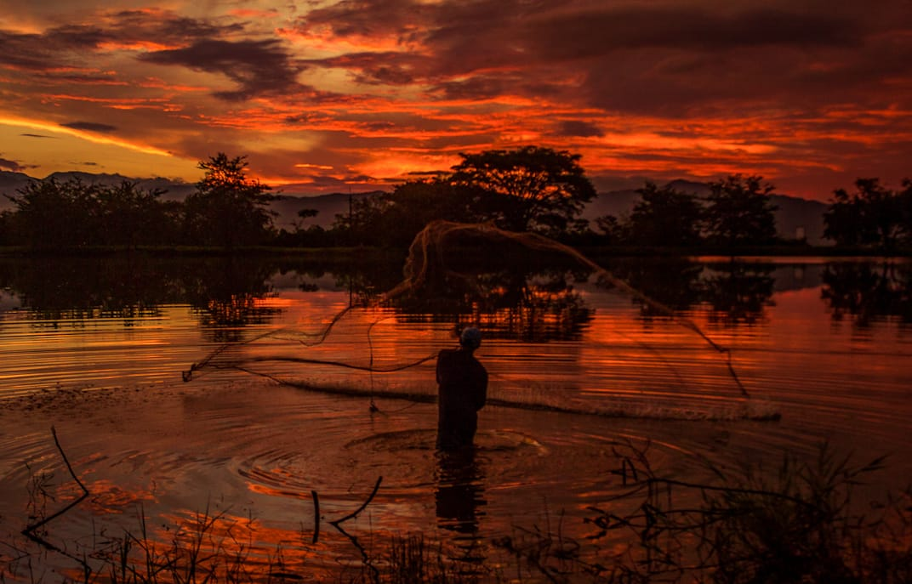
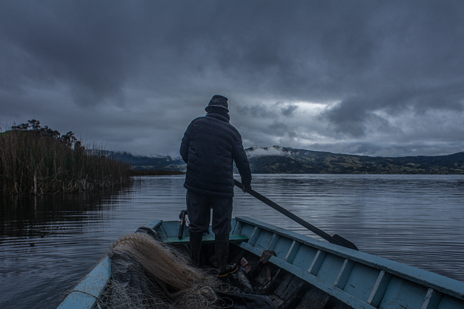
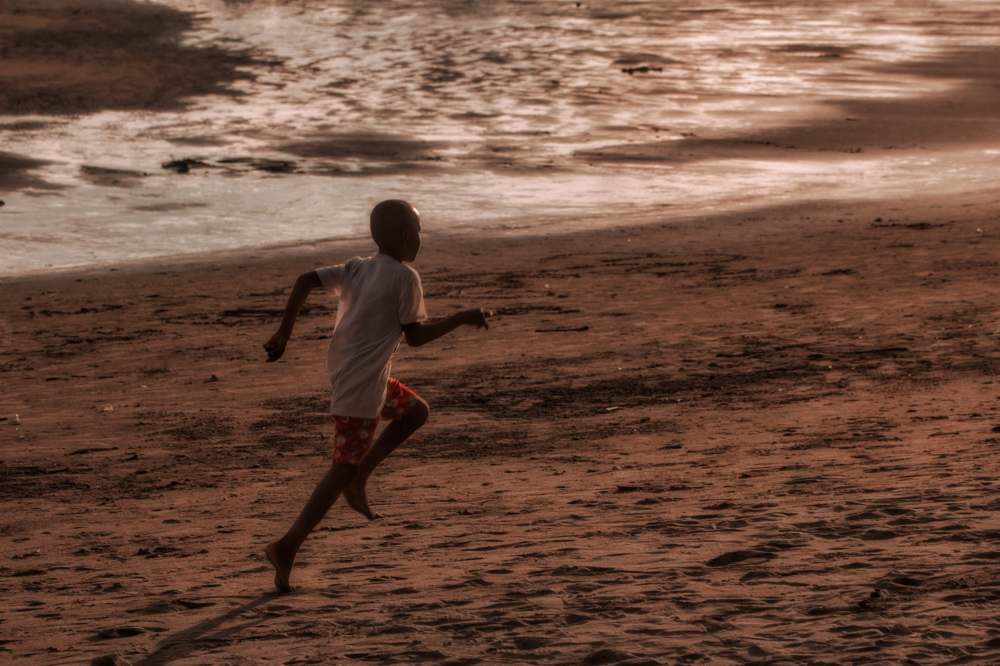

Aquí (Octavio Paz), Mis pasos en esta calle Resuenan En otra calle Donde Oigo mis pasos Pasar en esta calle Donde Sólo es real la niebla.
 

A un general (Julio Cortázar), Región de manos sucias de pinceles sin pelo de niños boca abajo de cepillos de dientes Zona donde la rata se ennoblece y hay banderas innúmeras y cantan himnos y alguien te prende, hijo de puta, una medalla sobre el pecho Y te pudres lo mismo.
